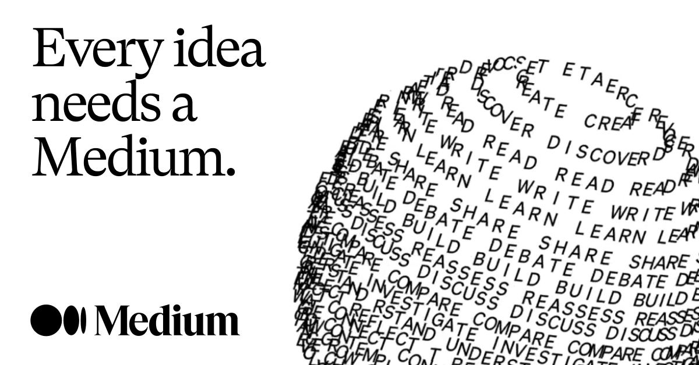

Objetivo: Recopilar información relacionada al campo de la Agricultura, específicamente su interacción con tecnologias emergentes.
La internet se ha vuelto hoy en día el medio de comunicación que más influye sobre las personas, entendiendo pues que cada año aumenta significativamente la cantidad de información disponible la cual se vuelve a su vez casi imposible de asimilar en el tiempo promedio que poseemos. Por ello, una forma de divulgar información de interés de manera selecta y concisa es mediante los blogs.
Durante estos últimos meses de búsqueda bibliográfica, sobre la tesis que ando realizando, me he dado con la sopresa de encontrar buena información de manera concisa (e incluyendo código) sobre algunos temas relacionados al campo de las ciencias de la computación en forma de artículos. El portal que voy a comentar es Medium.
Según Wikipedia, Medium es un servicio de publicación de blogs fundada por los cofundadores de Twitter en 2012 con el objetivo de permitir a usuarios de Twitter escribir posts más largos (más allá de los 280 caracteres por post de la plataforma). La plataforma presenta blogs escritos por profesionales y no profesionales brindando así información enriquecedora sobre distintas áreas.
En Medium, hay dos tipos de blogs: de paga y gratuita. Algunos autores limitan el acceso a sus publicaciones para el público que tenga una cuenta con membresía en la plataforma (podría entenderse que dichos autores publican de forma independiente siendo el pago de una membresía una forma de retribución a su trabajo). Las membresías, al igual que cualquier otro portal de información, se adquieren por plazos de tiempo: mensual, anual, etc. Adquirir una membresía tampoco es muy cara en pocas palabras pero, en caso adquirir una membresía, la plataforma brinda dos accesos gratuitos a cualquier publicación de paga al mes.
En esta sección conforme vaya revisando artículos interesantes, los iré anexando por aquí. Una opción para revisar los blogs sin límtes (trampa) es usando un explorador Tor.